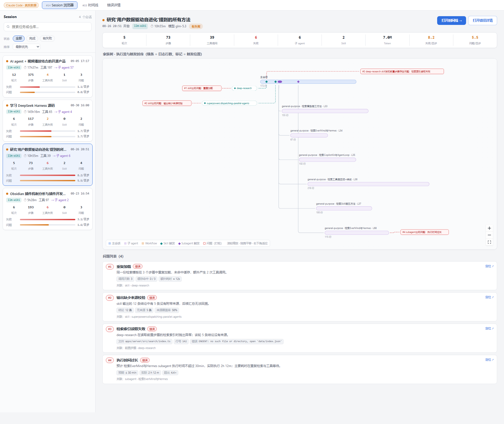
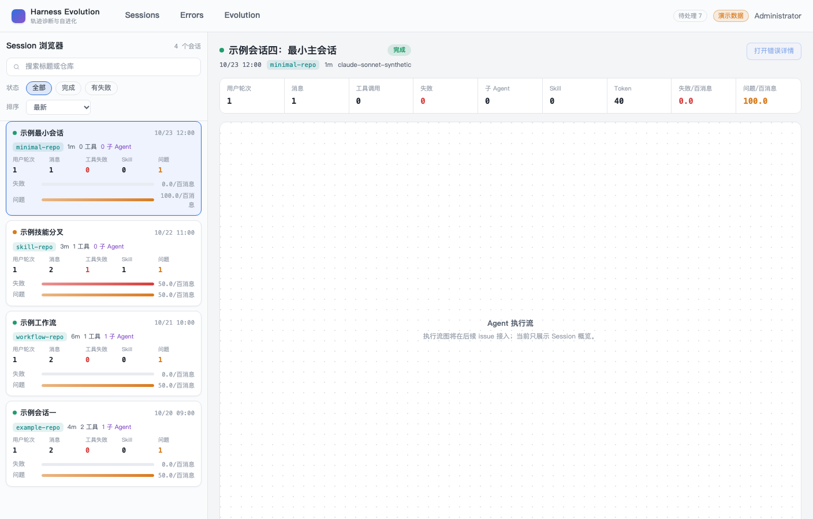
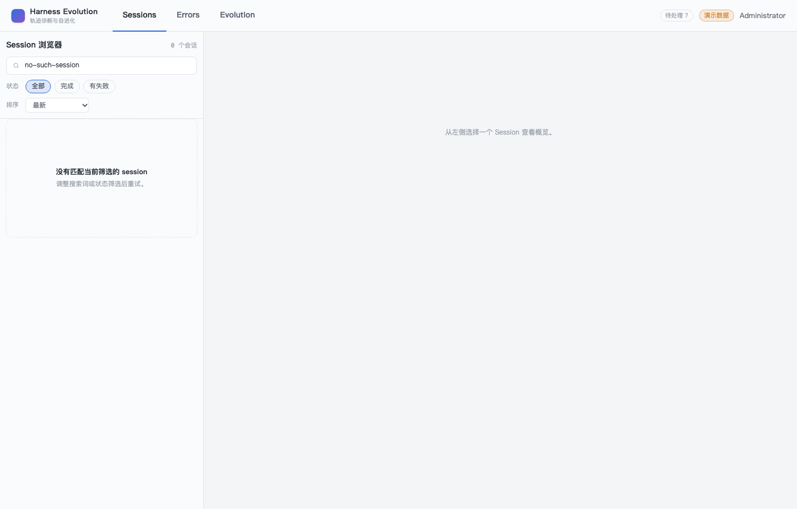
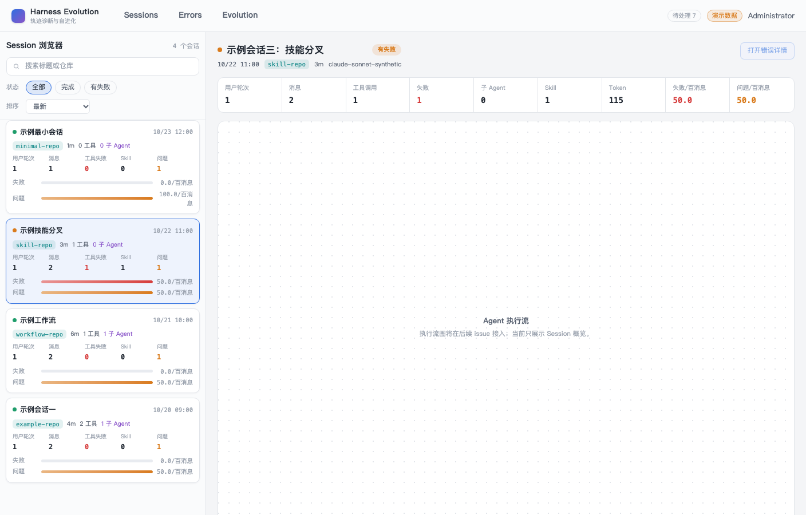
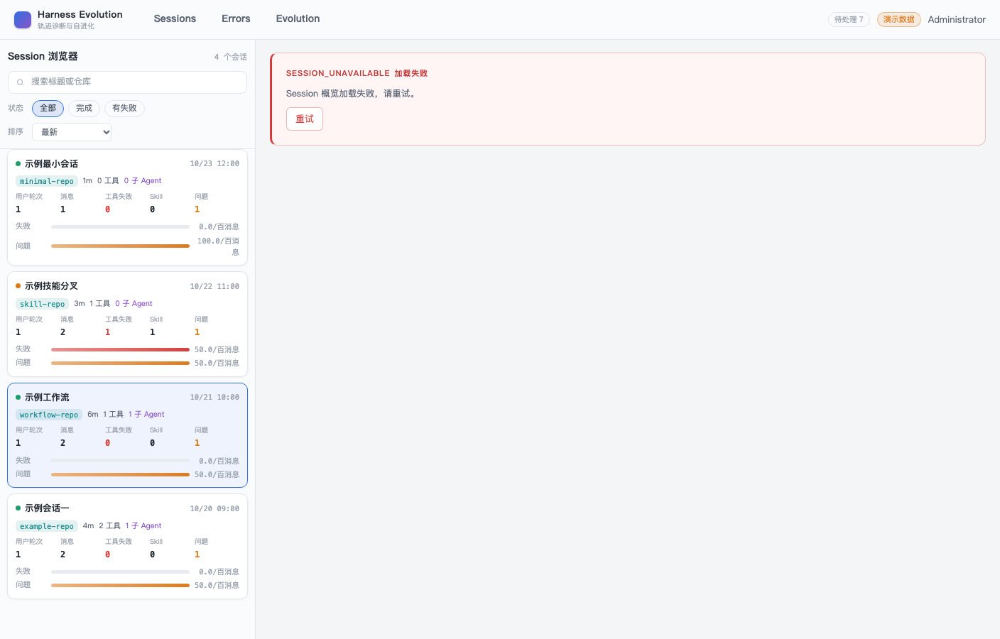
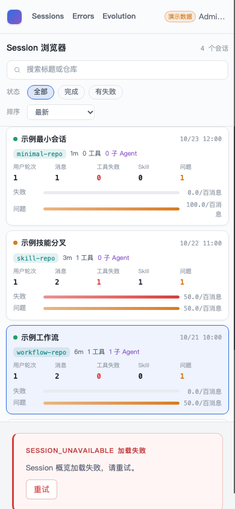

- Issue
- #41 · M3 session browser
- PR
- #102
- Commit
- 506bd01
- Runtime
- FastAPI + Vite + Chrome CDP
- Data
- fixtures seed → SQLite
- Computer Use
- macOS locked；证据来自真实 headless Chrome/CDP
Harness Evolution · PR #102
M3-01 Session 浏览器 · 集成冒烟
在真实 FastAPI、Vite 与 headless Chrome/CDP 中途经 4 个 canonical Session，验证原型两栏布局、Session 卡、双密度条、概览、URL 恢复和 390px 响应式。
8冒烟场景
8通过
4真实 Session
0控制台异常
Environment and Artifact
2026-10-26 · macOS · Chrome headless/CDP · loopbackScenario Matrix
8 pass| # | 场景 | 结果 | 观测 | 证据 |
|---|---|---|---|---|
| 01 | 登录页原型视觉 | PASS | 亮色背景、白色认证卡、无 TopNav，页面可操作。 | screenshots/01-login.png |
| 02 | 两栏 Session 浏览器 | PASS | 360px 侧栏、4 张白卡、1 个选中态、8 条密度条、720px 后续占位。 | screenshots/02-sessions-default.png body=rgb(244, 245, 247) sidebar=360px |
| 03 | 搜索与空态 | PASS | 搜索写入 URL，匹配为空时展示明确空态。 | screenshots/03-search-empty.png ?q=no-such-session |
| 04 | 键盘选择与独立概览 | PASS | 第二张卡 Enter 选择成功，路径更新，概览同步切换。 | screenshots/04-second-session-overview.png /sessions/10000000-0000-4000-8000-000000000003 |
| 05 | 前进/后退恢复 | PASS | 后退恢复搜索 URL，前进恢复选中 Session 路径。 | history.back/forward assertions |
| 06 | 概览错误态 | PASS | 不存在的 Session 显示错误态，列表/壳层不白屏。 | screenshots/05-detail-error.png |
| 07 | 390px 单列 | PASS | 4 张卡纵向堆叠，无横向溢出，用户菜单保留。 | screenshots/06-mobile-sessions.png scroll=390/390 |
| 08 | 原型边界 | PASS | 无 /tree 请求、无 Vue Flow；错误详情保持后续能力入口。 | treeRequests=0 overviewStats=9 |
Issues and Observations
No defects foundNo defects were found.
Evidence
7 screenshots






Automated Coverage Assessment
4 areas reviewed| 区域 | 覆盖 | 结论 | 建议 |
|---|---|---|---|
| Session API | 真实 FastAPI + SQLite + fixtures | 4 个 Session 与真实概览数据可用。 | CI 继续执行 API 与 MySQL lane。 |
| 列表交互 | 真实 Chrome/CDP | 搜索、空态、键盘选择、前进后退已验证。 | 页面改动继续跑 m3-session-browser E2E。 |
| 视觉原型 | 截图 + computed style | 360px 侧栏、白卡、亮色底、8 条密度条、720px 占位已确认。 | 后续 m3-02 继续复用原型 token。 |
| 原生 Computer Use | macOS 锁定 | 未绕过锁屏；使用真实 headless Chrome/CDP。 | 解锁后可用浏览器标签补充人工截图。 |
Conclusion
通过m3-01 的列表、概览、URL 状态和原型响应式行为在真实进程中正常，未发现集成缺陷。
- 4 个真实 Session 和 8 条密度条完成页面级验证。
- 前端没有请求 Agent tree，执行流仍明确留给后续 issue。
- 390px 单列无横向溢出，控制台无异常。
证据源：真实 FastAPI、Vite、SQLite 与 Chrome headless/CDP；HTML 由 report-data.json 生成。